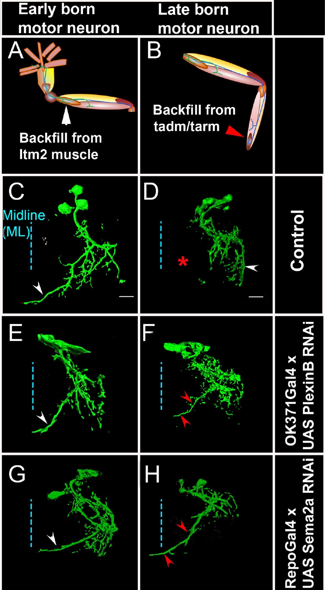
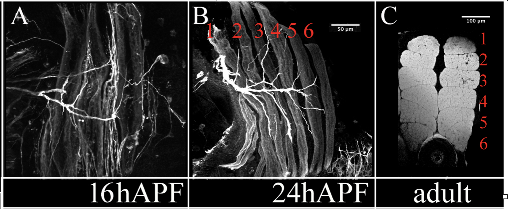
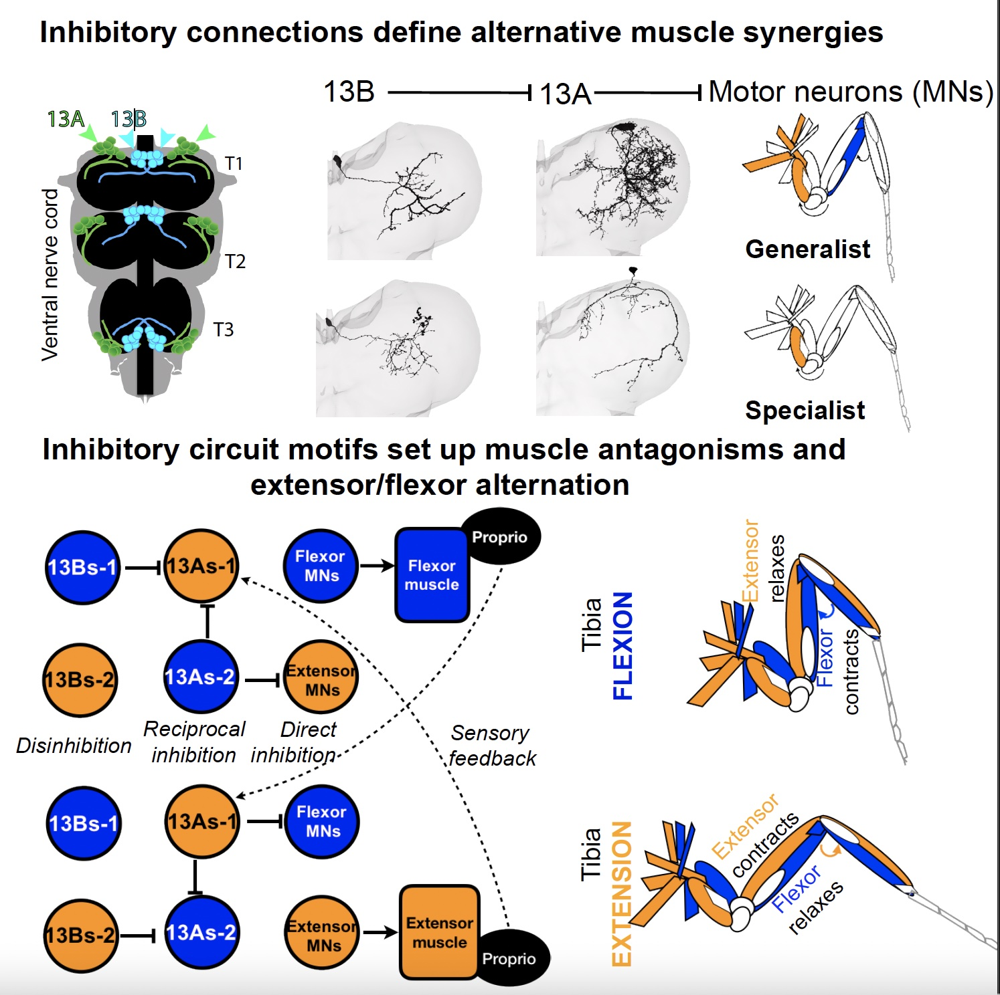
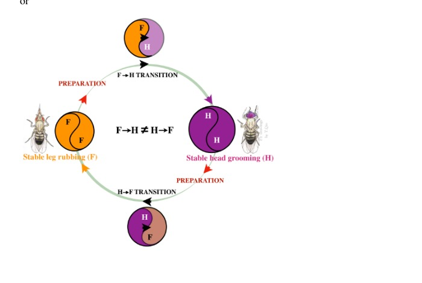

How do biological systems build coordinated movement?
I study how developmental interactions among neurons and muscles establish motor-system architecture, how neural circuits coordinate movement, and how animals transition flexibly between actions.
Assistant Project Scientist · Neuroscience Research Institute · University of California, Santa Barbara
Movement depends on the coordinated organization of tissues, neurons, and behavior. My work brings developmental biology, neural circuit analysis, connectomics, quantitative behavioral measurements, and computation together to understand how motor systems are assembled and how they operate.
01
Leg motor-neuron development
How do developing tissues establish the architecture of motor systems? My developmental work examines how molecular and cellular interactions organize leg motor neuron myotopic map and their connections with muscles based on neuronal birth order.

Motor-neuron architecture and dendritic targeting. Based on Syed et al., eLife (2016).
02
Flight muscle development
I investigate how developing muscles acquire the architecture needed for adult movement, using flight-muscle development to study tissue organization across developmental stages.

Flight-muscle architecture across developmental stages.
03
Neural circuits for movement
I investigate inhibitory premotor circuits in the ventral nerve cord that control rhythmic leg movements during grooming, including how reciprocal inhibition and disinhibition shape motor output.

Inhibitory circuit architecture and alternative muscle synergies.
04
Behavioral flexibility
Animals can change actions without simply stopping one behavior and starting another. I use quantitative kinematics and state-space analysis to study the stability of grooming states and the transitions between them.

Transitions between stable grooming states.
Across these projects, I ask how biological organization shapes what motor systems can do—and how they adapt when behavioral demands change.
Publications
Selected work
Selected peer-reviewed publications and a current manuscript in preparation. See my ORCID profile for additional details.
Syed, D. S., Gowda, S. B. M., Reddy, O. V., Reichert, H., & VijayRaghavan, K. eLife 5:e11572.
Developmental mechanisms that organize leg motor-neuron architecture and support walking.
Manuscript in preparation
Structured Transitions Between Motor Attractors Underlie Behavioral Flexibility in Drosophila Grooming
Syed, D. S., Ravbar, P., Masood, B., & Simpson, J. H.
Examines stable grooming states and structured transitions between actions.
Teaching & mentoring
Making complex science accessible
I see teaching as an opportunity to help students develop the confidence and tools to ask questions, work with evidence, and learn collaboratively. My approach combines high expectations with structured support and hands-on inquiry.
Research-based learning
At UCSB, I have helped lead undergraduate research experiences that introduce students to neural anatomy, electron-microscopy connectomes, and the process of moving from data to biological questions. I use scaffolded milestones, peer discussion, and practice explaining scientific reasoning.
Mentoring and scientific independence
I have mentored undergraduate researchers through research projects, presentations, and honors theses, supporting students as they build technical skills, scientific independence, and confidence communicating their work. I am also involved in developing community-centered neuroscience teaching resources.
Neuroscience curriculum development
I have contributed to Pueblo Brain Science, a community-centered neuroscience curriculum connecting Drosophila development, connectomics, and behavior. This work brings neuroscience concepts into hands-on educational activities and supports broader access to neuroscience education.
Mentoring undergraduate students in connectome proofreading.
Photo courtesy of UCSB.
I am especially interested in learning environments where students can connect biological concepts to real data and participate meaningfully in discovery.
News & media
Research, interviews & outreach
Research coverage, interviews, and science communication connected to my work and scientific journey.
Coverage of research in the Simpson Lab on neural circuits, grooming behavior, and the selection and coordination of movements. The article highlights my contributions as a postdoctoral fellow.
A profile highlighting my scientific journey from Kashmir to neuroscience research at UCSB, and my perspectives on research and opportunities for women in science.
Videos
Interview in Urdu/Hindi
Conversation about my journey in science and research.
I am an Assistant Project Scientist at the Neuroscience Research Institute at the University of California, Santa Barbara, where I work with Julie H. Simpson. Using Drosophila, I investigate how developmental interactions build motor systems, how neural circuits coordinate movement, and how animals transition between behavioral states.
My training spans developmental biology, neural circuit assembly, connectomics, and quantitative behavioral analysis. Across these areas, I am interested in how the organization of biological systems shapes what they can do—and how they adapt when behavioral demands change.
Curriculum vitae
CV
Download my current curriculum vitae as a PDF.
Curriculum Vitae
Education, appointments, research, publications, and mentoring.